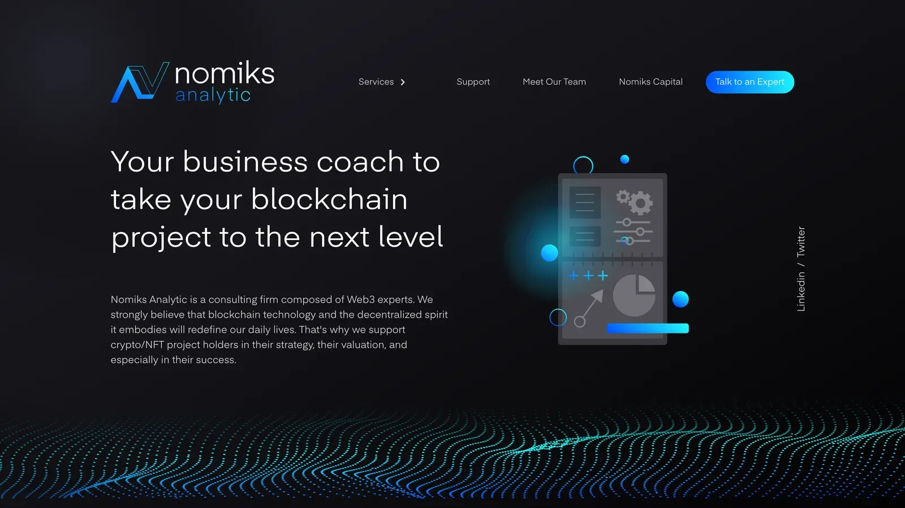
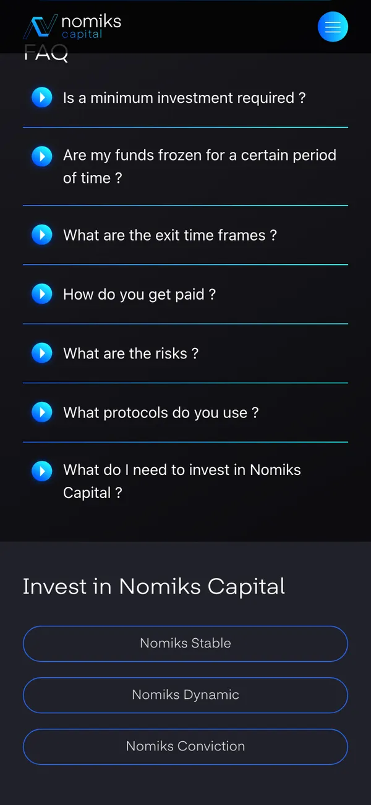

프리랜서 · Web3 및 암호화폐
Nomiks
블록체인 컨설팅 및 투자 회사 Nomiks의 소개 사이트입니다. 홈 페이지와 두 서비스 Analytic, Capital을 소개하는 페이지로 구성되며, 영어와 프랑스어로 제공됩니다.


배경
움직임이 있는 어두운 톤의 사이트
Nomiks는 블록체인 프로젝트를 지원하고(Nomiks Analytic) 암호화폐 투자 상품을 제공합니다(Nomiks Capital). 디자이너는 파란색 그라데이션, 일러스트, 스크롤에 따라 움직이는 요소가 있는 어두운 톤의 사이트를 구상했습니다.
Next.js 프로젝트 생성부터 다국어 적용까지 사이트 전체를 개발했으며, 디자이너의 시안과 피드백을 따랐습니다.
담당 업무
3개 페이지, 2개 언어
- 02.2022홈: React 컴포넌트 분리, 모바일 버전, 햄버거 메뉴, Rellax를 활용한 패럴랙스(모바일에서는 비활성화)
- 03.2022Analytic, Capital 페이지: 데스크톱 및 모바일 버전, 애니메이션 아코디언, 모바일 고정 헤더, Headless UI를 활용한 드롭다운 목록
- 03.2022마무리 작업: 법적 고지, 파비콘, 검색 최적화(SEO) 및 공유용 제목과 설명(Open Graph)
- 04.2022다국어 적용: next-i18next로 사이트 전체 영어·프랑스어 지원, 언어 선택 기능
주요 화면
최신 버전(2022년 5월)의 사이트를 로컬에서 다시 실행해 캡처했습니다. 이미지를 클릭하면 크게 볼 수 있습니다.
스크롤 패럴랙스
일러스트 주변의 도형은 텍스트와 다른 속도로 스크롤됩니다. 어떤 도형은 더 빠르게, 어떤 도형은 더 느리게 올라갑니다. Rellax로 구현했으며 모바일에서는 비활성화했습니다.
- 홈: 큰 로고
- Analytic 페이지: 헤더
- Analytic 페이지: 카드 뒤에 큰 버블이 있는 4단계 방법론



모바일 화면: 홈, 두 가지 서비스, Analytic 페이지, FAQ
배운 점
처음부터 끝까지 단독으로
Nomiks에서는 Next.js 프로젝트 생성부터 사이트 오픈까지 프로젝트를 혼자 진행했습니다.
시안이 검사할 수 있는 파일 없이 PDF로만 전달되어, 디자인을 충실히 구현하기 위해 크기와 간격을 직접 찾아내는 방법을 익혔습니다.
가장 까다로웠던 부분은 패럴랙스였습니다. 데스크톱부터 모바일까지 레이아웃이 깨지지 않으면서 도형이 움직여야 했습니다. 각 섹션을 여러 화면 크기에서 확인했습니다.